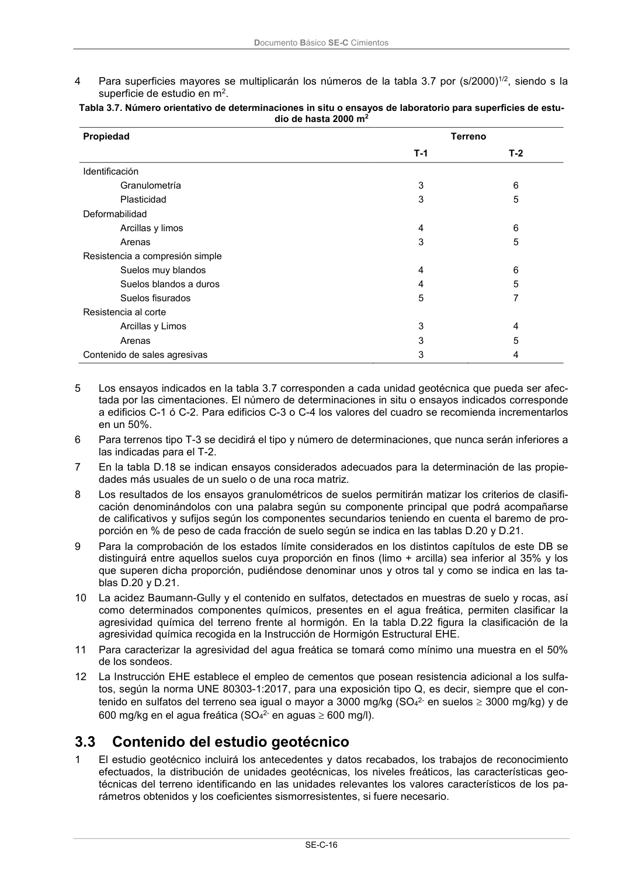

DB-SE-C · 3.2.6 Ensayos de laboratorio · versión 2019-12-20 · capa oficial
Formatos: JSON compacto · Markdown · PDF fuente
Ámbito del documento · texto del ámbito · documento y tablas
ID técnico a0045 · PDF pág. 20-23 · jerarquía no validada por persona · contrastado con el literal de la página 20 (candidato tipográfico); no validado por persona · padre: a0010
3.2.6 Ensayos de laboratorio 1 De todas las muestras obtenidas en calicatas o sondeos se hará una descripción detallando aque- llos aspectos que no son objeto de ensayo, como el color, olor, litología de las gravas o trozos de roca, presencia de escombros o materiales artificiales, etc, así como eventuales defectos en la cali- dad de la muestra, para ser incluida en algunas de las categorías A o B. 2 El número de determinaciones del valor de un parámetro de una unidad geotécnica investigada será el adecuado para que éste sea fiable. Para una superficie de estudio de hasta 2000 m2, en ca- da unidad de importancia geotécnica se considera orientativo el número de determinaciones que se indica en la tabla 3.7. 3 Deberá procurarse que los valores se obtengan de muestras procedentes de puntos de investiga- ción diferentes, una vez que se hayan identificado como pertenecientes a la misma capa. Las de- terminaciones se podrán obtener mediante ensayos en laboratorio, o si es factible con ensayos in situ, aplicando las oportunas correlaciones si fueran necesarias. Documento Básico SE-C Cimientos SE-C-16 4 Para superficies mayores se multiplicarán los números de la tabla 3.7 por (s/2000)1/2, siendo s la superficie de estudio en m2. Tabla 3.7. Número orientativo de determinaciones in situ o ensayos de laboratorio para superficies de estu- dio de hasta 2000 m2 Propiedad Terreno T-1 T-2 Identificación Granulometría Plasticidad Deformabilidad Arcillas y limos Arenas Resistencia a compresión simple Suelos muy blandos Suelos blandos a duros Suelos fisurados Resistencia al corte Arcillas y Limos Arenas Contenido de sales agresivas 3 3 4 3 4 4 5 3 3 3 6 5 6 5 6 5 7 4 5 4 5 Los ensayos indicados en la tabla 3.7 corresponden a cada unidad geotécnica que pueda ser afec- tada por las cimentaciones. El número de determinaciones in situ o ensayos indicados corresponde a edificios C-1 ó C-2. Para edificios C-3 o C-4 los valores del cuadro se recomienda incrementarlos en un 50%. 6 Para terrenos tipo T-3 se decidirá el tipo y número de determinaciones, que nunca serán inferiores a las indicadas para el T-2. 7 En la tabla D.18 se indican ensayos considerados adecuados para la determinación de las propie- dades más usuales de un suelo o de una roca matriz. 8 Los resultados de los ensayos granulométricos de suelos permitirán matizar los criterios de clasifi- cación denominándolos con una palabra según su componente principal que podrá acompañarse de calificativos y sufijos según los componentes secundarios teniendo en cuenta el baremo de pro- porción en % de peso de cada fracción de suelo según se indica en las tablas D.20 y D.21. 9 Para la comprobación de los estados límite considerados en los distintos capítulos de este DB se distinguirá entre aquellos suelos cuya proporción en finos (limo + arcilla) sea inferior al 35% y los que superen dicha proporción, pudiéndose denominar unos y otros tal y como se indica en las ta- blas D.20 y D.21. 10 La acidez Baumann-Gully y el contenido en sulfatos, detectados en muestras de suelo y rocas, así como determinados componentes químicos, presentes en el agua freática, permiten clasificar la agresividad química del terreno frente al hormigón. En la tabla D.22 figura la clasificación de la agresividad química recogida en la Instrucción de Hormigón Estructural EHE. 11 Para caracterizar la agresividad del agua freática se tomará como mínimo una muestra en el 50% de los sondeos. 12 La Instrucción EHE establece el empleo de cementos que posean resistencia adicional a los sulfa- tos, según la norma UNE 80303-1:2017, para una exposición tipo Q, es decir, siempre que el con- tenido en sulfatos del terreno sea igual o mayor a 3000 mg/kg (SO42- en suelos 3000 mg/kg) y de 600 mg/kg en el agua freática (SO42- en aguas 600 mg/l). 3.3 Contenido del estudio geotécnico 1 El estudio geotécnico incluirá los antecedentes y datos recabados, los trabajos de reconocimiento efectuados, la distribución de unidades geotécnicas, los niveles freáticos, las características geo- técnicas del terreno identificando en las unidades relevantes los valores característicos de los pa- rámetros obtenidos y los coeficientes sismorresistentes, si fuere necesario. Documento Básico SE-C Cimientos SE-C-17 2 En el estudio se recogerá la distribución de unidades geotécnicas diferentes, sus espesores, exten- sión e identificación litológica, hasta la profundidad establecida en los reconocimientos. Para ello se elegirán los perfiles geotécnicos longitudinales y transversales que mejor representen la distribución de estas unidades. Para los edificios de categoría C-0 y C-1 el número de perfiles mínimo será de dos y para el resto de tres. Se determinará en su caso la unidad geotécnica resistente, así como las agrupaciones de unidades geotécnicas de similares características. Igualmente se recogerá la pro- fundidad de las aguas freáticas y, en su caso, las oscilaciones de las mismas. 3 De cada una de las unidades geotécnicas relevantes se dará su identificación, en los términos con- tenidos en las tablas de este DB, y de acuerdo con los ensayos y otra información de contraste utili- zada, los parámetros esenciales para determinar la resistencias de cada unidad geotécnica, tales como densidad, rozamiento, cohesión, y los de deformabilidad, expansividad, colapso, y parámetros de agresividad de agua y terreno. 4 En municipios con aceleración sísmica de al menos 0,08 g, o si se ha solicitado expresamente, de cada sondeo, se identificará la clasificación de cada unidad geotécnica o estrato a efectos de su comportamiento sísmico, según la NSCE. Si no se ha explorado hasta 30 m de profundidad, se jus- tificará el valor asignado a los estratos por debajo de la profundidad explorada. El coeficiente C de cada sondeo se establecerá como promedio del valor de cada estrato, ponderado con su espesor. Si los resultados de los distintos sondeos son diferentes, se concluirá, justificadamente, el valor C con el que debe obtenerse tanto la acción sísmica del emplazamiento, como el cálculo de dicho efecto en el edificio y sus cimientos. La justificación será tanto más matizada cuanto más se aparte el valor de C de 1,15 5 Los resultados del estudio, incluyendo la descripción del terreno, se referirán a las distintas unida- des geotécnicas. En su caso, las posibles alternativas de solución de cimentación, excavación o elementos de contención en su caso, técnica y económicamente viables, se establecerán de acuer- do con los problemas planteados así como de la posible interacción con otros edificios y servicios próximos. 6 El estudio geotécnico contendrá un apartado expreso de conclusiones y, en su caso, a petición del proyectista o del Director de Obra, de recomendaciones constructivas en relación con la cimenta- ción e incluirá los anejos necesarios. En el apartado de conclusiones y recomendaciones se recoge- rán éstas de tal forma que se puedan adoptar las soluciones más idóneas para la realización del proyecto para el que se ha hecho el estudio geotécnico. Asimismo se indicarán los posibles trabajos complementarios a realizar en fases posteriores, antes o durante la obra, a fin de subsanar las limi- taciones que se hayan podido observar. 7 Las recomendaciones antedichas serán cualitativas y cuantitativas, concretando todos los valores necesarios con la precisión requerida para ser utilizados para el análisis y dimensionado de los ci- mientos, los elementos de contención o el movimiento de tierras. 8 El estudio, en función del tipo de cimentación, debe establecer los valores y especificaciones nece- sarios para el proyecto relativos a: a) cota de cimentación; b) presión vertical admisible (y de hundimiento) en valor total y, en su caso, efectivo, tanto bruta como neta; c) presión vertical admisible de servicio (asientos tolerables) en valor total y, en su caso, efectivo, tanto bruta como neta; d) en el caso de pilotes, resistencia al hundimiento desglosada en resistencia por punta y por fus- te; e) parámetros geotécnicos del terreno para el dimensionado de elementos de contención. Empu- jes del terreno: activo, pasivo y reposo; f) datos de la ley “tensiones en el terreno-desplazamiento” para el dimensionado de elementos de pantallas u otros elementos de contención; g) módulos de balasto para idealizar el terreno en cálculos de dimensionado de cimentaciones y elementos de contención, mediante modelos de interacción suelo-estructura; h) resistencia del terreno frente a acciones horizontales; i) asientos y asientos diferenciales, esperables y admisibles para la estructura del edificio y de los elementos de contención que se pretende cimentar; Documento Básico SE-C Cimientos SE-C-18 j) calificación del terreno desde el punto de vista de su ripabilidad, procedimiento de excavación y terraplenado más adecuado. Taludes estables en ambos casos, con carácter definitivo y du- rante la ejecución de las obras; k) situación del nivel freático y variaciones previsibles. Influencia y consideración cuantitativa de los datos para el dimensionado de cimentaciones, elementos de contención, drenajes, taludes e impermeabilizaciones; l) la proximidad a ríos o corrientes de agua que pudieran alimentar el nivel freático o dar lugar a la socavación de los cimientos, arrastres, erosiones o disoluciones; m) cuantificación de la agresividad del terreno y de las aguas que contenga, para su calificación al objeto de establecer las medidas adecuadas a la durabilidad especificada en cimentaciones y elementos de contención, de acuerdo con los Documentos Básicos relativos a la seguridad es- tructural de los diferentes materiales o la instrucción EHE; n) caracterización del terreno y coeficientes a emplear para realizar el dimensionado bajo el efec- to de la acción sísmica; o) cuantificación de cuantos datos relativos al terreno y a las aguas que contenga sean necesa- rios para el dimensionado del edificio, en aplicación de este DB, otros Documentos Básicos re- lativos a la seguridad estructural de los diferentes materiales o la instrucción EHE, y a otros DB, especialmente al DB-HS (Habitabilidad: Salubridad); p) cuantificación de los problemas que pueden afectar a la excavación especialmente en el caso de edificaciones o servicios próximos existentes y las afecciones a éstos; q) relación de asuntos concretos, valores determinados y aspectos constructivos a confirmar después de iniciada la obra, al inicio de las excavaciones, o en el momento adecuado que así se indique, y antes de ejecutar la cimentación, los elementos de contención o los taludes pre- vistos. 3.4
1 referencias con forma DB se han ocultado por no cumplir la sintaxis oficial; la lista original sigue en el JSON.

PDF fuente redistribuible: copia fiel enlazada en esta página (SHA256 verificado).